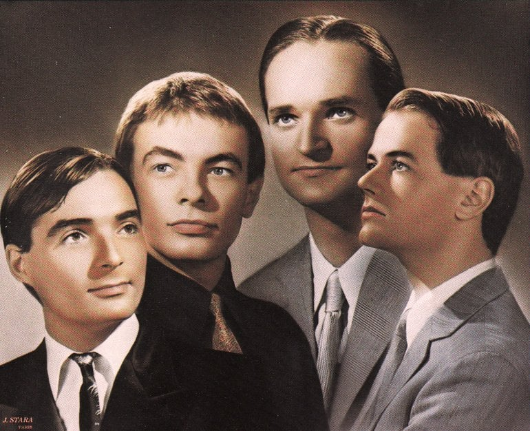

Eletronica
A Gênese do Musica Eletronica
A musica eletronica vem desde o primeiro estrumento eletronico criado, sendo ele o Telarmônio. A partir disso tivemos uma grande evolucao na tecnologia até chegarmos no estilo que hoje chamamos de eletronica.
Um ponto de virada para a indústria da música em geral foi a invenção do fonógrafo (mais tarde conhecido como gramofone), até chegarmos nos gravadores de fita em 1940, que ajudou a o estilo eletronico ganhar reconhecimento.
Em 1952, Karlheinz Stockhausen se juntou ao estudio de musica de Schaeffer, focando sua producao inteiramente em sons gerados eletronicamente, acompanhados de sons acusticos alterados.
Porem a polularizacao da musica veio na invenção dos sintetizadores digitais e o uso de softwares em computadores, que transformaram a musica eletronica no que conhacemos nos dias de hoje.
Artistas Fundamentais da Musica Eletronica
Alguns dos artistas foram muito importantes para popularizar a musica eletronica, como os citados a seguir:
- Kraftwerk
- Jean-Michel Jarre
- Giorgio Moroder
- Daft Punk
- Aphex Twin
- The Chemical Brothers
- Brian Eno
Cada um desses artistas, e muitos outros, contribuíram com inovações e estilos únicos que expandiram as fronteiras da música eletrônica.
Albuns Iconicos da Musica Eletronica
A música eletrônica é rica em álbuns conceituais e coleções de faixas que definiram épocas e influenciaram gerações. Abaixo, alguns exemplos de álbuns que tiveram um impacto profundo na história da música eletrônica:
| Álbum | Artista/Banda | Ano de Lançamento | Breve Destaque |
|---|---|---|---|
| Trans-Europe Express | Kraftwerk | 1977 | Marco do synth-pop e influência . |
| Oxygène | Jean-Michel Jarre | 1976 | Clássico da música ambiente e eletrônica. |
| Homework | Daft Punk | 1997 | Revitalizou a house music globalmente. |
| Selected Ambient Works 85-92 | Aphex Twin | 1992 | Referência do IDM e da música ambiente. |
| Blue Lines | Massive Attack | 1991 | Pioneiro do trip-hop, fundindo gêneros. |
| The Fat of the Land | The Prodigy | 1973 | Explosão do big beat com energia punk. |
Ícones da Eletrônica e Seu Legado
Kraftwerk: Os Arquitetos do Som Eletrônico
O grupo alemão Kraftwerk é universalmente reconhecido como um dos pioneiros mais importantes da música eletrônica. Com sua estética robótica, temas futuristas e o uso inovador de sintetizadores, vocoders e baterias eletrônicas, eles criaram um som único que influenciou diretamente o desenvolvimento do synth-pop, hip-hop, techno e new wave. Álbuns como "Autobahn", "Trans-Europe Express" e "The Man-Machine" são considerados obras-primas atemporais.
Daft Punk: Embaixadores Globais da Dance Music

A dupla francesa Daft Punk, formada por Guy-Manuel de Homem-Christo e Thomas Bangalter, foi fundamental para levar a house music e a música eletrônica francesa para o cenário mundial. Conhecidos por seus capacetes de robô e uma fusão inovadora de house, funk, disco e pop, eles criaram hinos da dance music como "Around the World", "One More Time" e "Get Lucky". Sua influência visual e sonora é vasta, inspirando uma geração de produtores e artistas.